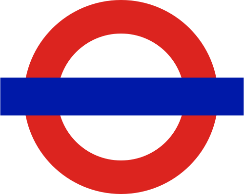
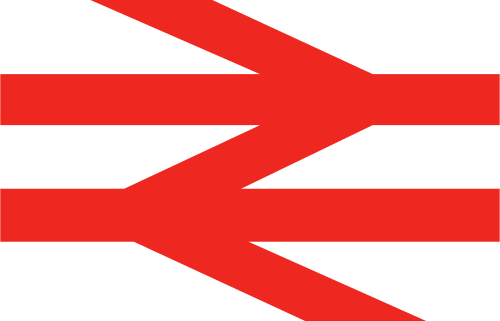
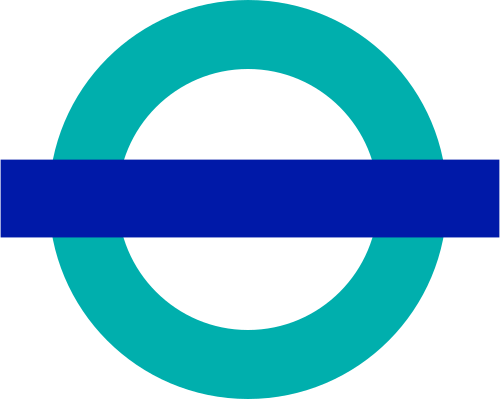
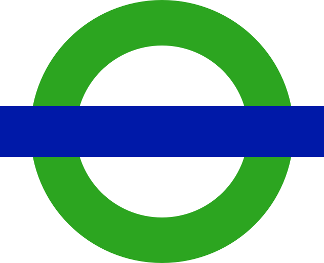
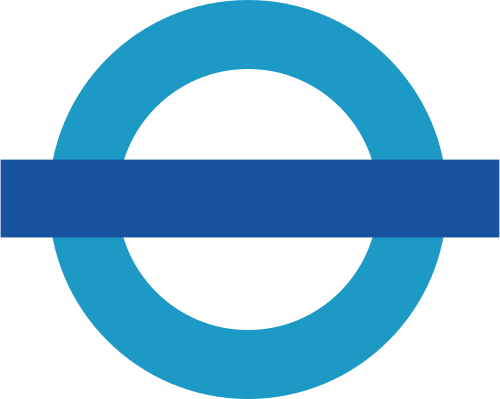

busMap
busMap is an interactive visualization of the the London bus network.
Click on any stop, and it will show you all the routes that stop there. Press + / - on the keyboard to zoom.
I wrote busMap using processing.js. It is available under an MIT licence. Data was provided by Transport for London.
Data sources
busMap relies on two sources of data provided in CSV format with a total size of 5.1MB. One has details of all the bus stops in London. The other has details of the stops that make up each bus route.
Bus stops
Each record in the bus stop data represents a stop. The bus stop data looks as follows:
| Stop Code LBSL | Bus Stop Code | Naptan Atco | Stop Name | Location Easting | Location Northing | Heading | Stop Area | Virtual Bus Stop |
|---|---|---|---|---|---|---|---|---|
| 10003 | 77150 | 490000108B | HIGHBURY & ISLINGTON STATION <> # | 531573 | 184786 | 127 | C903 | 0 |
The LBSL code is a unique identifier for each stop. The bus stop code is a different identifier which passengers can use to obtain live updates of expected arrivals; it is displayed on a sign at each stop. The easting and northing give the Ordinance Survey grid reference for the location. Virtual bus stops were ignored.
The name includes details of other modes of transport available from a given stop:
| Symbol | Icon | Connection available |
|---|---|---|
| <> |  | London Underground |
| # |  | National Rail |
| [DLR] |  | Docklands Light Railway |
| (DLR) | ||
| >T< |  | Croydon Tramlink |
| <T> | ||
| >R< |  | River Bus (boat) |
| <R> |
Bus routes
Each record in the route data represents a stop along a route. The route data looks as follows:
| Route | Run | Sequence | Stop Code LBSL | Bus Stop Code | Naptan Atco | Stop Name | Location Easting | Location Northing | Heading | Virtual Bus Stop |
|---|---|---|---|---|---|---|---|---|---|---|
| 1 | 1 | 1 | 14456 | 53369 | 490000235Z | NEW OXFORD STREET | 529956 | 181417 | 75 | 0 |
The route is the number on the front of the bus. Even run numbers mean the stop is part of the outward leg of the route; odd numbers mean it is the return leg. The sequence gives the order of stops along the leg. LBSL codes were used to match this data to the canonical set of bus stops.
Processing the data
Each stop is represented as a busStop object recording the details imported from the data. Each route is represented as a busRoute object, with a number and a list of stops making up its outbound and return legs.
It then needs to work out where different buses share parts of their routes. To do this, it goes through each leg of each route and creates a series of stopPair objects, each representing the ends of a segment (e.g. route A->B->C involves the pairs A->B and B->C).
The program then uses each stopPair to create a list of stopPairRoute objects. Each stopPairRoute represents a unique stopPair plus a list of all the busRoute objects that pass through it.
For convenience, the code also records references to make drawing easier. Each busStop, for instance, has a pointer to each leg of each route and each stopPairRoute objects that pass through it.
Displaying the output
When you click on a bus stop, two things happen. It draws the routes of all the buses that stop there, and it displays the information panel at the bottom. The panel is populated from the relevant busStop object.
To draw the routes, it loads the list of all the legs of all the routes that stop there. It loads the stopPairRoute for each part of each of those routes. Only routes that stop at your chosen stop will be drawn.
For each stop pair, it works out the vector from one end to the other. It also calculates the normal to that vector, so that it can show each bus going the same way side-by-side along the route.
For optimization, the code also checks and only tries to draw stops whose locations fit into the current display or links where one stop is on the screen. It updates these when you zoom or scroll.